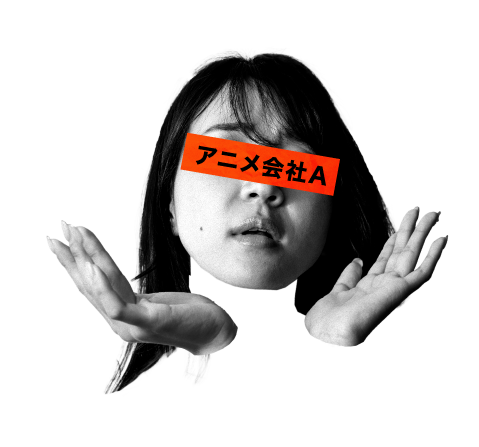
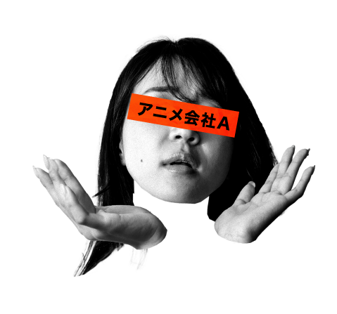

さまざまな業種、さまざまな制作物、さまざまなやりとり
あなたの企業にあった使い方ができます

イラスト、雑誌、動画、パッケージなどに
関わる色々な企業様が「制作物」の進行や、
やりとりに解決したい
課題・お悩みを抱えています。


 


確認しやすいスレッド・
タイムライン形式での
進行管理
スレッド形式、タイムライン上で制作進行ができ、「先祖返り」が起きづらく、現段階の制作ステイタスが把握しやすい！誰がどのような状態で停滞が起こっているのかも一目瞭然です！
やり取りした制作物、
赤入れのデータを
一元管理
一箇所でデータ管理ややり取りを行うので、データ共有の作業が大幅に効率化できる！クラウド上で大容量のデータを安心に管理できます！
ストレス、手間のない
フィードバック（赤入れ機能）
静止画、動画、音声に赤入れが可能、もうPDFに出力したりスキャンの必要がなく、わかりやすいUIで赤入れのストレスがありません！
使いやすい便利な
プロジェクト
管理機能
複数の制作プロジェクトの進捗が可視化されているガントチャート機能もあって、直観的な進捗確認が可能です！
社外の人も参加しやすい
コラボレーション機能
外部パートナー、クライアントと連携できる機能が充実していておすすめしやすい！すぐに連携ができて、コミュニケーションコストも削減可能！ ※外部ツールとの連携も行っています。
専用ソフトがなくても
確認・レビュー・赤入れが
ラクラク可能！
静止画、動画、ドキュメント、音楽等様々な形式をそのままアップするだけでレビューが開始されます。専門ソフトを互いやチームが全て共有する必要はありません！
赤入れ機能
面倒なファイルのダウンロードや印刷＆スキャンは不要。ブラウザやアプリ上で制作物のチェックとフィードバックが完結します。
手書き感覚での赤入れを実現
イラスト・動画・ドキュメントなど、様々な形式のファイルに対して手書きでの赤入れができます。ペンをつかうとさらに細かく詳細に書き込むこともできます。
レビュー画面で修正前後を左右に並べて確認
制作物を横に並べて確認できます。修正前後の比較や、指摘内容が反映できているかなど、迅速に確認できます。更に、2つの画像を重ね合わせての確認も可能です。
動画や音声もシンプルな操作でレビュー
AVI、MP4、MOV等、様々な形式の動画にレビューが可能。自分の止めたい箇所で停止させて、直接コメントや指示の記入ができます。
タイムライン
制作物ごとにスレッドを管理するので、ファイルやコメントが集約されます。チャットのようにタイムライン上でやりとりができ、誰が何を行ったか一目瞭然です。
ゲスト・コラボレーション機能
クライアントや外部スタッフとの連携も容易。プロジェクトごとにメンバー招待し、アイテムの追加やコメントの投稿など、操作権限を管理できます。
差分検出機能
横並びで制作物の表示させ、差分を自動検出します。差分箇所は任色で表示できるため一目瞭然で、見落としもなくなります。目で確認する時間や負荷を大幅に削減できます。
文章の校正・校閲を
支援する機能
アップロードしたドキュメント内の指定した文字を検索、ヒットした文字列をフォーカス表示したり、「修正」「トル」「ルビ」といった校正記号を挿入したり、文字列のハイライトなど、文章の校正・校閲作業を行うための支援機能が充実しています。
専用ソフトがなくても使える
Adobe Illustrator、Adobe Photoshop、Officeドキュメント、PDFや各種動画などファイル形式を選ばず、ブラウザでチェックが可能。そのまま手描きやコメントでフィードバックすることができます。
本質的に必要なステップのみに
集中できます！
無駄な工程を圧縮！
印刷代などの
コストをカット！
もっと考える時間を
プラス！
効率的にレビューする環境を
Brushupで実現し、
制作物の質があがります！
「いい制作はいいレビューから」
を実現されている企業・団体様
株式会社 Discovery 様
代表取締役社長 篠木隆秀さん
クリエイティブ局 マネージャー 西本祐大さん
ネット広告制作スタッフの予定管理が劇的に改善、
ハイクオリティの広告を高い生産性で制作可能に
大阪でWebマーケティング事業を営む株式会社 Discovery 様は、2019年に Brushup を導入することで、スタッフの予定管理とネット広告の制作業務を劇的に効率化しました。社長の篠木隆秀様は「クライアントとともに Brushup を使用することで、広告のクオリティ向上にもつながっている」と語ります。
READ MORE

神戸市 様
市長室広報戦略部広報課
係長 和田大輔さん、上出雄ニさん
iPad 活用で「紙とまったく同じ感覚」で
校正が可能に。作業時間と印刷コストが激減
月に1回、神戸市の市内全世帯、関連施設などに約84万部配布される『広報紙 KOBE』を制作しているお二人。制作の効率化をはかるために2019年7月から Brushup を導入し、係内とデザイン事務所とのやりとりに活用しています。iPad と併用することで、大幅な作業時間、印刷コストの削減を実現しました。
READ MORE
株式会社マイナビ 様
転職情報事業本部 西日本制作進行部
部長 Aさん、課長 Bさん
130名超のスタッフの制作業務を圧倒的に効率化、
リモートワークでも万全な進行管理を実現
株式会社マイナビの転職情報事業本部・西日本制作進行部では、3年半前に求人サイト「マイナビ転職」の広告制作にBrushupを導入し、社内外130名のスタッフが活用されています。導入でデザイン進行全体が「見える化」し、業務効率化とともにテレワーク対応もスムーズに実現できたというお話を、ディレクターお二方に伺いました。
READ MORE